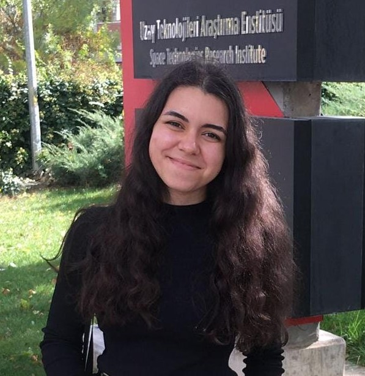

12 Mart 2002 tarihinde İstanbul'da doğdu. Eğitim hayatı boyunca ne yapmak istediğine dair bir fikri yoktu. Lisede karete ve yüzmeyle ilgilendi. Bu sayede sporla tanıştı. Spora olan özel ilgisi yüzünden kendisini bir süre sporcu olarak gördü. Akabinde ilgisi ve merakının daha farklı bir alanda olduğunu fark etti. Bir gün gökyüzünü izlerken evrenin eşsiz büyüsüne kapıldı. Bu sayede uzayı araştırmaya başladı. Araştırmalarına devam ettikçe kendisine yeni bir kariyer planı çizdi. Havacılık ve Uzay alanında ilgilenmenin kendisini ileride mutlu edeceğini fark etti. Üniversite sınavının ardından ODTÜ'de bir profesörün söyleşisine gitti. Bu söyleşi ile birlikte Metalurji ve Malzeme Mühendisliği ilgisini çekti. Bu bölümü tercih etti. Şu an Ankara Yıldırım Beyazıt Üniversitesi Metalurji ve Malzeme Mühendisliği öğrencisi olarak devam etmektedir.
Okulundaki Kadın ve Çocuk Hakları Kulübü'nün yönetim kurulu üyesidir. Women Are Everywhere isimli bir Instagram sayfasına sahiptir. Burada ağırlıklı olarak kadınların başarılarına değinerek görünürlüğü arttırmaya çalışmaktadır. Kadınların yaşadığı ön yargıları kırmak ve kadınların kendi hikayelerini anlatmalarına yardımcı olmak için bu sayfada bilgilendirici içerikler paylaşmakta ve kadınların yalnız olmadıklarını fark etmelerine yardımcı olmaktadır. Ayrıca paylaşımları bölüm seçecek kişiler için de bir yol gösterici niteliğinde.
İnsan hakları konusunda elinden geleni yapmaya çalışmaktadır. Topluluğa katılma nedenlerinden biri, insanların bazı konulara olan farkındalıklarını arttırmaya çalışmaktır. Bunun birçok şeyin başlagıcı olduğunu düşünmektedir.
İnsanların uzay alanlarına karşı çok fazla ön yargılı olduklarını ama bu ön yargının bilinmezlikten oluştuğunu düşünmektedir. Topluluk olarak katılacağı ve yapacağı etkinliklerde bu ön yargıyı kırmayı amaçlamaktadır.
Türk Roket Topluluğu içerisinde herhangi bir yazısı bulunmamaktadır.
 Ana Sayfa
Ana Sayfa
 Hakkımızda
Hakkımızda
 Projelerimiz
Projelerimiz
 Etkinliklerimiz
Etkinliklerimiz
 Eğitim
Eğitim
 Blog
Blog
 Gönüllü Ol
Gönüllü Ol
 @turkroket
@turkroket
 Destekle
Destekle